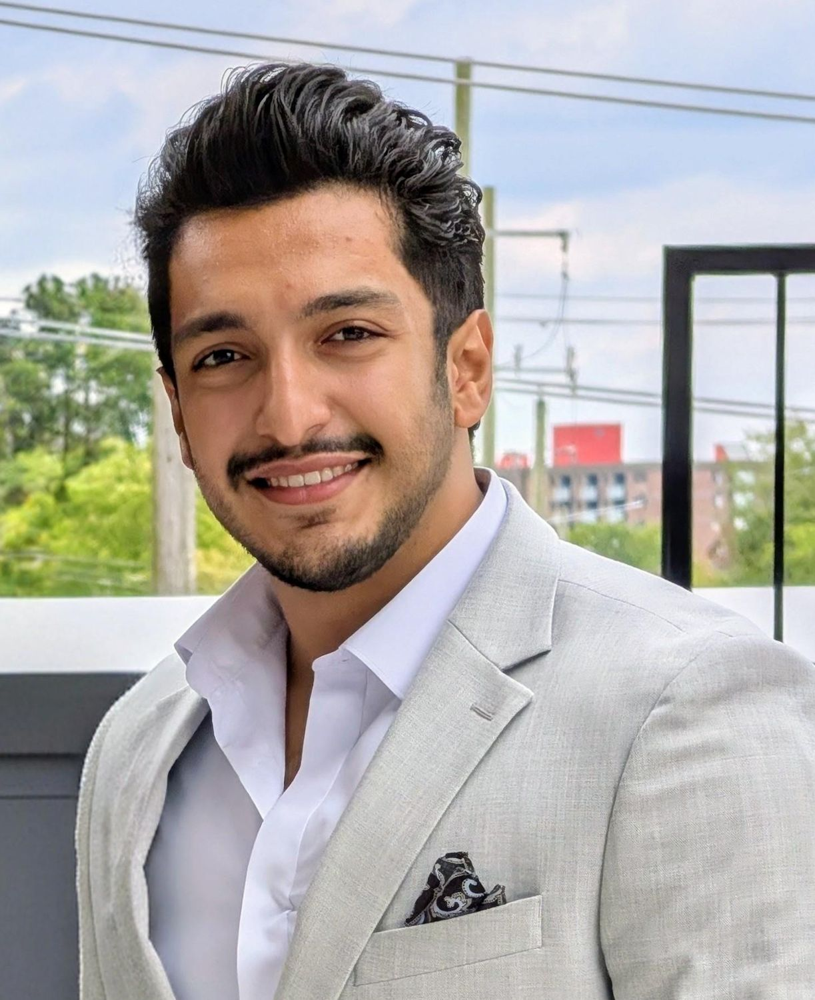

Materials · Manufacturing · Joining · RoboticsMASc, University of Waterloo · Apr 2027P.Eng. (PEO) in progress
Materials and manufacturing engineer
I am a materials and manufacturing engineer with a B.Sc. in Materials Science and Engineering and an M.A.Sc. from the University of Waterloo. My work covers process development, materials characterization and mechanical testing, using statistics and machine learning to turn experimental data into decisions. I have worked with industry partners, built software tools that automate inspection, and earlier managed operations and documentation at an engineering company. I also teach and mentor students in materials science and joining.

Ontario, Canada
Lap fillet weld, schematic. T1, T2: upper and base-sheet toes. R: root. a, b: legs. tth, te: theoretical and actual throat. du: undercut depth. θ: flank angle. ρ: toe radius. Weld Quality Suite finds T1 and T2 in the laser profile, measures the rest and checks it against ISO 5817, AWS and IIW limits.
550coupons in a robotic GMAW weld matrix
6AHSS and UHSS grades, 3 thickness combinations
90%less inspection time with my geometry software
25%ahead of schedule on the optimization phase
Selected work
Speaking · COM 2026, Calgary · Aug 17–20, 2026
Correlation between process parameters, microstructural evolution and mechanical performance in gas metal arc welded ultra-high-strength steels
I presented this work at the Conference of Metallurgy and Materials (MetSoc), with Dr. Elliot Biro. The project is supported by NSERC and Martinrea. A CSMC 2027 paper (Victoria, BC) is in preparation, and a journal paper on Bayesian-optimized weld geometry is under way.
Next: CSMC 2027 · Victoria, BC
Now
Graduate research engineer at CAMJ
At Waterloo's Centre for Advanced Materials Joining I lead the welding side of an NSERC project with Martinrea International. The project predicts the fatigue strength of GMAW joints in automotive frames, accounting for manufacturing variability. I run the robot cell, design the experiments, qualify the welds, and present results to Martinrea's engineering and quality teams every month.
I'm open to welding, process and materials engineering roles in Ontario, and to research positions, starting spring 2027.
Robotic GMAW process optimization for AHSS and UHSS
Automotive frames are moving to thinner, stronger steels, and their fatigue life depends on weld toe geometry. My job was to find process windows that give a repeatable, fatigue-friendly bead on every grade and joint, then prove those windows hold up.
Process
Robotic GMAW, CV and pulse
Cell
Fanuc industrial robot
Joints
Lap fillet, T-joint; similar and dissimilar
Materials
HSLA 340 / 420 / 550, CR980, UHSS100
Methods
Definitive screening, CCD response surface, ANOVA
Partner
Martinrea International (NSERC)
What I did
Planned a 550-coupon weld matrix
I programmed, set up and fixtured the Fanuc cell myself. I designed custom jigs for the lap and T-joints so every coupon is clamped the same way.
Screened every joint configuration first
I ran definitive screening designs for lap fillet and T-joints in thick-thick, thin-thin and dissimilar sheet combinations. They covered 8 parameters: wire feed speed, voltage, travel speed, CTWD, gap, and work and travel angles. Screening showed which parameters matter for each configuration.
Separated good welds from bad ones with data
I scored each screening weld pass/fail and trained a decision-tree classifier alongside ANOVA to find which settings drove porosity and humping.
Then optimized with response surface methodology
With the important factors known, I built central-composite response surfaces in Python and Minitab for toe radius and flank angle. I fitted separate models for each joint type and sheet combination, and for CV and pulse, which I compared with two-sample t-tests.
Validated the windows
I re-welded the selected candidates and re-measured them to confirm the geometry repeats before any mechanical testing.
Scope
550coupons welded on the robotic cell
6AHSS and UHSS grades
8process parameters studied
Process windows and results belong to the project partner and are not shown here.
Optimized lap filletOptimized T-joint filletCustom fixture in the robot cellA failed screening weld: surface porosity. Bad runs like this one taught the classifier where the process window ends.Humping and an irregular toe
Weld qualification: geometry, hardness and joint strength
An optimized bead only matters if it carries load. I designed the coupons and test matrix to study the effect of manufacturing discontinuities on joint performance, and mapped HAZ hardness to understand failure. I ran the study on both UHSS and AHSS steels.
Standards
AWS D8.1M, AWS D8.8M, IIW fatigue recommendations
Focus
Effect of manufacturing discontinuities, UHSS and AHSS
Tests
Lap-shear, fatigue, Vickers HV0.2 mapping
Analysis
Macro-sectioning, SEM fractography, metallography
What I did
Redesigned the T-joint coupon
Cross-sectioning destroys a specimen and shows the toe at only one slice. That's too slow for 550 welds. I designed a water-jet-cut T-joint that the Keyence scanner can measure along the whole weld without destroying it and keeps the coupon for mechanical testing.
Built a controlled test matrix
I designed an experimental matrix to study the effect of manufacturing discontinuities on lap-fillet joints, for both UHSS and AHSS steels.
Mapped hardness across the joint
Full-field HV0.2 maps of about 2,100 indents each (around 10 hours per map), plus line profiles through each sheet, to locate HAZ softening.
Traced failures to root causes
I examined fracture locations, bead discontinuities and HAZ softening using SEM fracture surfaces and the microstructure of each HAZ zone.
Status
This study is the basis of my first-author journal paper, now in preparation. Results will be shared once it is published.
HV0.2 hardness mapping across a lap fillet jointLap-shear coupon in the test frame gripsLap fillet macro-sectionWater-jet T-joint couponsT-joint macro-sectionT-joint fixture
3D digital image correlation captured strain localization and anisotropy in the rolling direction.
Microstructure and phases
SEM at 2,000× and 4,000×, EDS, and optical phase-fraction measurements taken at five locations through each sheet.
Hardness baselines
Base-metal hardness for comparison with the weld and HAZ maps.
Why it matters
Knowing the starting microstructure and properties of each grade gives a baseline for comparing the weld and HAZ, and real inputs for the project's models.
3D DIC strain field just before fractureCR980, SEM 2,000×HSLA 340, SEM 2,000×Optical micrograph for phase fractionMTS frame with the DIC camera setup
Data-efficient control of GMAW fillet weld geometry
Every new stack-up or wire still means another full DOE. In my next paper I build one Gaussian-process model per geometric feature from the existing Martinrea DOE, then invert the models with Bayesian optimization to recommend parameters that reach a target geometry with as few validation welds as possible.
Models
Gaussian process regression, one per feature
Inverse design
Bayesian optimization within the process window
Features
Toe angle, toe radius, leg lengths, throat
Interpretation
SHAP values, GPR length-scales, compared with ANOVA
Data
Martinrea DOE + Weld Quality Suite measurements
Output
Journal paper; parameter control maps for industry
The loop
Weld
Robotic GMAW lap fillet and T-joints, using the parameter sets chosen for each round.
Scan and measure
Keyence 3D scans processed by my numerical-gradient method into toe and leg features. A subset is cross-sectioned each round to check the scans.
Model
Per-feature GPR gives each prediction with a calibrated uncertainty.
Choose the next welds
The acquisition function picks the most informative welds. After the final round, the models become control maps.
How success is judged
R² ≥ 0.80cross-validated, for every feature model
±10%of target geometry within 3 validation rounds
GPR-based Bayesian optimization has been used for GTAW bead geometry and for wire-arc additive manufacturing. As far as I know, it hasn't yet been applied to the fatigue-relevant toe features of GMAW lap fillet and T-joints on automotive stack-ups.
Status: planned November 2026 to February 2027, with data consolidation starting first. Results will be added here as the validation rounds finish.
Magnesium alloys for bone implants, modelled atom by atom
At K. N. Toosi University I used molecular dynamics to study how zinc and calcium change the mechanical response of magnesium, aiming for implants that match the stiffness of bone.
Tools
LAMMPS, OVITO (PTM, DXA)
Scale
About 350,000-atom supercells, 12 compositions
Alloying
Zn 0–3 wt%, Ca 0–0.8 wt%
Advisor
Dr. Abbas Montazeri Hedesh
Thesis
B.Sc. project, K. N. Toosi University, Feb 2023
Result
~35%lower elastic modulus with targeted alloying, closer to human bone
Adding zinc to pure magnesium raised the elastic modulus and lowered the yield strength. Adding calcium to the Mg–Zn alloys cut the modulus sharply and raised the yield strength slightly in some compositions.
I analysed the deformation mechanisms with structure identification (PTM) and dislocation extraction (DXA). Pure magnesium deformed mainly by twinning. In the alloys, Shockley partial dislocations and stacking faults formed on the basal plane.
Before that: biomaterials lab
With Dr. E. Salahinejad I made scaffolds by 3D printing and electrospinning, wrote the SOPs for the lab's critical instruments, and trained junior students as the lab superuser.
Starting supercell: Mg (green) with substituted Zn and Ca atomsPTM structure analysis after tension: twinning in pure MgSimulated stress–strain curves for Mg-2.0Zn-xCa alloysDislocations (lines) and stacking faults, binary Mg-2.0Zn (DXA)The same analysis for the ternary Mg-Zn-Ca alloy
University of Waterloo, Centre for Advanced Materials Joining · Advisor: Dr. Elliot Biro, P.Eng. · Industry partner: Martinrea International
Weld process development: developed robotic GMAW procedures for lap and T-joints across 6 AHSS/UHSS grades, using DOE screening and response-surface optimization to set validated process windows.
Industrial robot implementation: planned and ran a 550-coupon weld matrix on a Fanuc GMAW cell, including programming, fixturing and troubleshooting.
Qualification and standards: qualified welds to AWS D8.1M, AWS D8.8M and IIW fatigue recommendations through macro-sectioning, hardness profiling, lap-shear and fatigue testing.
Root-cause analysis: linked discontinuities, bead geometry and HAZ softening to losses in joint strength and fatigue life, using SEM, EBSD, 3D scanning, metallography and hardness mapping.
Inspection software: built a Python tool that measures weld geometry from 3D scans and generates inspection reports, cutting inspection time by 90%.
Coordination: led monthly technical reviews with Martinrea's engineering and quality teams and coordinated a 5-person team to 100% on-time delivery.
Training and documentation: trained and supervised 3 co-op students; wrote technical reports and papers, and presented at MetSoc COM 2026.
Sep 2025 – present
Graduate Teaching Assistant
University of Waterloo · BME 282, ME 535, ME 115
BME 282, Materials Science for Biomedical Engineers (Fall 2025, Fall 2026): weekly tutorials for cohorts of 78 and 90+ students.
ME 535, Welding and Joining Processes (Winter 2026): led laboratory sessions and tutorials on the metallurgy and mechanics of joining.
ME 115, Materials Science (Spring 2026): tutorials and laboratory sessions for about 120 first-year mechanical engineering students.
Feb 2023 – Jan 2025
General Manager
Abyaran Pahndasht Engineering Company, Tehran · promoted from Commercial Engineer
Finance digital transformation: led the company-wide move from Excel-based accounting to a single centralized accounting system, improving reporting accuracy and audit readiness.
Financial operations: managed day-to-day accounting, reconciliations and bank oversight; streamlined three-way matching of purchase orders, receipts and invoices.
Process automation: introduced automated administrative workflows, a standardized document-coding system and clear approval routes that removed decision bottlenecks.
Organizational restructuring: redesigned the company structure as it grew to more than 700 employees, adding intermediate management roles to speed up decisions.
Feb 2022 – Feb 2023
Commercial Engineer
Abyaran Pahndasht Engineering Company, Tehran
Prepared cost estimates for engineering projects and tenders, covering materials, labour and overhead.
Took part in tenders from bid preparation through submission and client meetings, and negotiated project funding with clients.
Joined engineering design reviews to align technical solutions with budget.
Managed bookkeeping, cost tracking, bank reconciliations and company tax filings.
Sep 2021 – Jan 2022
Quality Control (Co-op)
Alfa Sanat Pars Co. (industrial temperature solutions), Tehran
Performed resistance and insulation testing on ceramic, silicon carbide and cartridge heating elements.
Inspected thermowells and high-temperature ceramic parts for resistance to thermal shock and corrosion.
Documented QA metrics and calibration data so products met internal manufacturing standards before shipment.
Mar 2021 – Oct 2023
Research Assistant
K. N. Toosi University of Technology · Advisor: Dr. Abbas Montazeri Hedesh
Ran large-scale molecular dynamics simulations in LAMMPS of how Zn and Ca affect deformation in magnesium alloys, and compared the results with published experiments.
Showed that targeted alloying lowered the elastic modulus by about 35%, closer to that of bone. See the project
Oct 2020 – Mar 2021
Research Assistant (Co-op)
K. N. Toosi University of Technology · Advisor: Dr. E. Salahinejad
Wrote standard operating procedures for critical lab instruments and trained junior students as lab superuser.
Fabricated scaffolds by 3D printing and electrospinning, and prepared research posters and seminar presentations.
Papers and talks
Published
Machine learning-based classification of resistance spot welding quality using process parameter design
University of Waterloo · May 2025 – Apr 2027 · Grade A. International Master's Award of Excellence (2026). Coursework includes Fatigue Analysis and Design, Mechanical Metallurgy, Experimental Statistics, and Machine Learning.
Graduate studies, Materials and Chemical Engineering
University of Alberta · Jan – Apr 2025. Coursework in Welding Metallurgy and Fracture of Materials.
B.Sc., Materials Science & Engineering
K. N. Toosi University of Technology, Tehran · Sep 2018 – Feb 2023 · Grade A−. Ranked 2nd in the faculty (8th semester).
P.Eng. licensure with Professional Engineers Ontario in progress.
Teaching & leadership
Teaching, mentoring and the welding community
I've taught more than 300 students in materials science and welding, and I help bring industry to campus through the CWB student chapter.
Teaching assistant, University of Waterloo
Winter 2026
ME 535 · Welding & Joining
Led laboratory sessions and tutorials on the metallurgy and mechanics of joining.
Spring 2026
ME 115 · Materials Science
Tutorials and labs for about 120 first-year mechanical engineering students.
Fall 2025 · Fall 2026
BME 282
Materials Science for Biomedical Engineers: weekly tutorials for 78 and then 90+ students, plus a guest lecture.
Community
Member
CWB Association, Waterloo Student Chapter
Helping plan the chapter's Winter 2027 seminar on welding for Ontario's nuclear future: industry talks on CANDU refurbishment and SMR welding codes, handheld laser and cobot demos, and a careers panel.
Funding & Grants Coordinator
MMEGA
Mechanical and Mechatronics Engineering Graduate Association, University of Waterloo.
Mentoring
Co-op training
Trained and supervised 3 co-op students on the robotic welding cell, safety and coupon preparation.
In pictures
With fellow graduate students at an MMEGA eventMMEGA bonfire, Columbia LakeMMEGA fall BBQ, Oct 2026With an industry exhibitor at the MMEGA Graduate Research SymposiumHands-on GMAW in the lab
Coming March 2027
Welding industry event
We are setting up an event in March for the welding industry. Photos to follow.